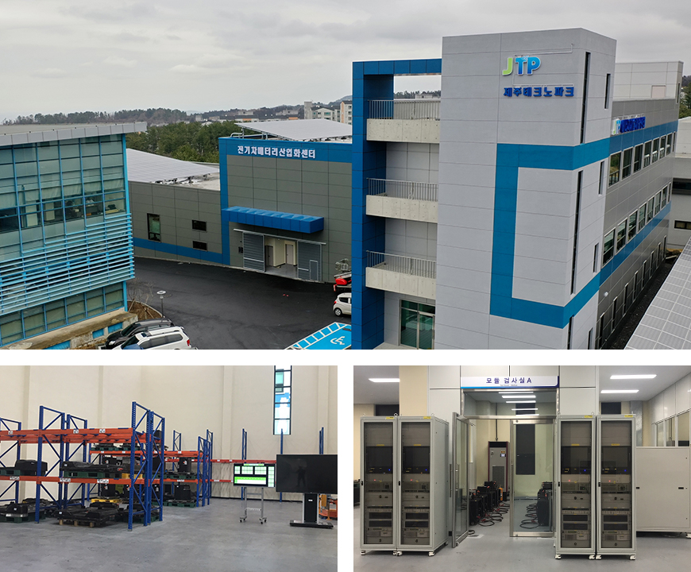

기획취재콘텐츠
- Home
- 제주라이프
- 기획취재콘텐츠
CFI 2030(Carbon Free Island 2030) 第二篇새로운 글


电动汽车的圣地——济州，入选免除限制特区，产业发展如虎添翼
- 一辆电动汽车在充电桩充电。ⓒ才艺商会尹昭真（音） -
2011年济州道首次普及电动汽车。当时环境部将首尔、全罗南道灵光以及济州道选定为“电动汽车领跑城市”，济州道在2012年公布“CFI2030计划”后，于2015年相继公布了“电动汽车普及推广及产业培育中长期计划”。这一政策起到了显著的效果，截至2019年12月，济州道内电动汽车登记数量为18178辆，占韩国国内电动汽车（89918辆）的20.2%，占济州道内行驶车辆总数的4.69%，比全国平均数据0.38%高出12倍之多。

※ - 资料来源：2013~2019，济州特别自治道“用数据看电动汽车领跑城市——济州” , 2020，济州汽车登记情况，济州道厅交通政策科

※ 资料来源：韩国国土交通部统计网站 (截至2019年12月)
充电基础设施等衍生产业完善的生态系统使电动汽车普及率水涨船高，但首先关注的还应当是济州道推行的各项扶持政策。
以2020年为基准，济州道内购买电动汽车最高可获得1320万韩元（轿车）至2500万韩元（货车）的补贴，购买电动车、报废燃油车或运出济州时，最高可获取200万韩元的报废补贴。此外，济州道还与银行签订协议，推出专属金融商品，保证居民既能享受购车补贴，也能以较低的利率贷款，从而提高普及率。

※ 资料来源：韩国国土交通部统计网站 (截至2019年12月)
电动汽车普及率不断提高，也得益于电动汽车相关产业生态系统的坚实基础。电动汽车产业可衍生多种商业模式，因此备受瞩目。最具代表性的相关产业、朝阳产业包括充电服务、电动汽车维修养护、电池重新利用、电动汽车改造等，其中充电设施及服务的成果最为显著。除首都圈外，济州道的电动汽车充电经营者最多。在维修养护服务方面，济州道与产业部计划从2020年起投资190亿韩元，以韩国生产技术研究院为基础，首先在济州运用该院研发的维修养护技术。
济州岛拥有全国独一无二的电动汽车电池产业化中心。该中心于2019年6月成立，采用追溯系统，运用区块链技术管理回收电池全流程（从入库到检查、评级、废弃出库），同时为制定电池性能评判标准奠定基础。通过以上措施，不仅能够减少废旧电池造成的环境污染，还能够通过电池大数据发掘新产业商机。

- 电动汽车电池产业化中心全景, 电动汽车电池产业化中心内部 ⓒ济州科技园能源融合中心提供 -
另一方面，这为多种商业模式齐头并进的济州汽车产业带来了新的机遇。2019年11月，济州道入选电动汽车充电服务免除限制特区，旨在立足电动汽车充电服务领域，减少制度革新导致的社会成本，发掘新产业。济州投入267亿韩元，吸引15家企业参与，最终选定如下领域，进行为期最短2年的项目验证，具体包括：△升级充电基础设施以缩短充电时间 △提供移动型充电服务以减少占用空间 △搭建充电基础设施共享平台以促进充电服务使用 △基于充电数据提供简易诊断服务。
这意味着与电动汽车充电器相关的各种限制将被放宽，共享或利用移动型电动汽车充电器以及个人充电器获取收益成为可能。未来，济州便携式充电器等充电设施的多样化开发将会日益活跃，充电器容量不断提升，个人可将充电器委托给专业企业实现共享，用作充电基础设施，从而获得收益。尤其是充电器共享服务被评定为面向全球的出口平台，有望积极推动济州电动汽车产业走向全球。
- 一辆电动汽车在充电桩充电。ⓒ才艺商会尹昭真（音） -